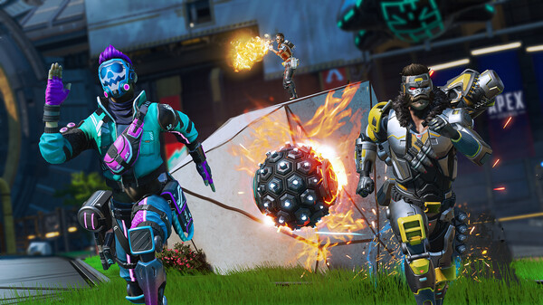

Conquer with character in Apex Legends, a free-to-play* Hero shooter where legendary
characters with powerful abilities team up to battle for fame & fortune on the fringes of the Frontier.
Master an ever-growing roster of diverse Legends, deep-tactical squad play, and bold,
new innovations that go beyond the Battle Royale experience — all within a rugged world
where anything goes. Welcome to the next evolution of Hero Shooter. Apex Legends is a Battle Royale. Everyone knows that. You drop in, you try to wipe the other teams, and if you're the last left standing then you win. But is this all that Apex Legends has to offer? Absolutely not. Limited-Time-Modes are regularly introduced as part of seasonal events, and besides these, we have permanent access to a number of PVP, training and ranked modes, separate from the classic BR. What are all these modes, though? And, how do they work? Let's start with the mode you need to play before you can play any other: Training. We won't need to spend much time here, this is the kind of classic 15-minute tutorial that every Battle Royale game feels it's necessary to produce. They don't really go into enough depth to properly prepare you for success, but you learn the basics. In Apex Legends, the tutorial asks you to jump through the usual hoops: learn how to move, use equipment, revive teammates and call in support. All said and done, it takes about 20 minutes of playtime to complete the tutorial, and then you're allowed to play other modes.

BEYOND BATTLE ROYALE
Show 'em what you're made of in Apex Legends, a free-to-play hero shooter where contenders from across the Frontier team up to battle for glory, fame, and fortune.
Legendary characters
Explore a growing roaster of powerful legends
The Ultimate Squad
Choose your Legend, team up, and combine your unique skills to be the last squad standing.
Strategic Combat
Master an expanding assortment of powerful weapons, unique abilities, and game-changing equipment in a variety of enviroments and limited-time and permanent modes.
YOUR SQUAD
Pick your Legend and join forces with other players, combining your unique skills to form the ultimate squad.
A WORLD WHERE ANYTHING GOES
The Frontier War is over. After decades of conflict between the IMC and the militia founded to fight them, the region of space known as the Frontier can finally see peace.
But liberation can come at a cost: the Frontier worlds were left barren by the war, and promised aid dwindled to nothing. With no way to support themselves, those who remained had no choice but to leave their homes. The brave relocated to the Outlands.
A remote cluster of planets on the fringes of the Frontier, the Outlands are untouched by war and teeming with resources and opportunity. But life is cheap here, and danger lurks around every corner. Its pioneers, explorers, and outlaws used to spend their lives locked in an endless power struggle – now, they settle their differences in the Apex Games, a bloodsport where Legends from all corners of the Frontier compete for money, fame, and glory.
trailer
BATTLE ROYALE
Located on planets across the Outlands, these massive landscapes host the massive Apex Games.
Boreas’ moon, Cleo, was once whole–until a meteor and a myth broke it apart. Unbeknownst to the peoples of Boreas, the meteor didn’t just split the moon and cause surface-level destruction, but also sent the entire planet on a path to destruction. It wasn’t until researchers discovered the link between the moon and an increase in devastating weather events that the nations of Boreas came together and promised to heal Cleo, naming their efforts Project Hope. What previously was an unoccupied satellite became a teeming colony of researchers, engineers, and builders. Workers mended divides, celestial rock became fields, and new technologies were born.
However, long years and slow progress caused the peoples’ hearts and wallets to turn from Hope. This forced the Cleo Restoration Committee to privatize the moon for funding–with townhomes, shopping centers, and prestige burial plots added. Now, Cleo is a collection of public and private enterprises, including the Apex Games, all with the hope of saving Cleo and Boreas.
KINGS CANYON
Once a simple settlement on Solace, the island known as Kings Canyon didn't thrive until the IMC chose it as a hub for research and development. It housed an airbase, a water treatment plant, and a plethora of other facilities to support IMC operations. To blow off steam, the IMC soldiers stationed here would compete in a gladiator-esque combat arena they nicknamed ‘Thunderdome’, the predecessor of the Apex Games. Secretly, it was also home to underground facilities that hid the IMC’s more radical operations–like a highly classified project on Phase tech and a program to create a simulacra army powered by a single brain.
In the years since the IMC left the Outlands, the island has undergone many changes due to Syndicate construction projects and freak incidents. The most notable being the destruction of the Repulsor Tower, an underground explosion that sank Thunderdome and Skulltown, and a ship crash that obliterated the northern edge of Kings Canyon. Now, the Syndicate is further altering the landscape with terraforming projects to its caves, and salvage operations for Relic (the area formerly known as Skull Town). But no matter how it changes, Kings Canyon will always be the first home of the Apex Games.
WORLD’S EDGE
A harsh planet beset by intense volcanic activity, Talos was once deemed uninhabitable until a rare mineral compound was found beneath its surface. The IMC built heat-reducing towers to super-cool Talos’s natural lava flows and allow resource extraction—the facility that housed them was optimistically dubbed “New Dawn”, and the town of World’s Edge grew around it. Then, an explosion in one of the towers covered the surrounding area in a lethal flash freeze. World's Edge was abandoned, save for a small community of hunters who once spurned technology (led by local hero, Bloodhound).
Over time, the risks were forgotten and World's Edge drew the attention of two new groups who sought to exploit the planet's energy-rich soil: the Mercenary Syndicate and Hammond Robotics. Due to both groups' experimental technologies, World's Edge became unstable and the community of hunters were forced to relocate. In an attempt to divert from controversy, the Apex Games opened a museum dedicated to celebrating the Thunderdome, the Apex Games, and the people who made them great. Today, World’s Edge continues to be the second home of the Apex Games and a key operational center for Hammond Robotics.
OLYMPUS
Once a city built on dreams, Olympus was a utopia floating in clouds above Psamathe. Here, the brightest minds in the Outlands could gather and exchange ideas, leading to breakthroughs in the sciences and arts. However, an accident in an experimental research facility led to the creation of the Phase Rift (a massive bubble of Phase energy), and the Outlands’ best and brightest quickly abandoned the city. With the support of the Mercenary Syndicate, Hammond Robotics stepped in to transform Olympus into a new stage for the Apex Games.
Since then, a ship from the Icarus Fleet brought a deadly virus along with powerful Medusa Vines to Olympus. While the virus was cured, the vines remained and kept the ship docked to the city. Additionally, a disastrous attempt to transport Olympus to a new location using phase technology sent the city into a tailspin, its structures being littered across the terrain as it stabilized. The changes shook up the Games, creating new challenges for participating Legends.
STORM POINT
This deserted island wasn’t always so deserted. Beautiful and teeming with resources, Storm Point was the prime candidate for early IMC expeditions to planet Gaea. However, IMC settlement teams quickly discovered that intense tropical storms plague the island and a permanent settlement was established nearby–the city of Suotamo. As the city grew, the IMC built power-generating storm catchers on Storm Point to keep up with their energy needs.
When the IMC pulled out of the Outlands, the storm catchers fell into disrepair. Left with only one functional storm catcher and few resources, the naive citizens of Storm Point decided to pull it down for parts. The absence of the storm catcher exacerbated the surrounding storms, causing them to overtake the island. After the Syndicate Treaty brought peace and order to the Outlands, many of the storm catchers were restored and a survey of the area revealed previously unknown settlements but no survivors. The island was then abandoned for many years, save for the occasional scavenger or pirate, until it caught the eye of the Mercenary Syndicate.
They knew there was old IMC tech and dangerous wildlife on Storm Point, but they didn’t realize how deadly the island was until the rumblings of a colossal sea beast woke the old IMC defenses. Now, Spectres roam fully-stocked IMC Armories, giving Apex Games competitors a new challenge.


.svg)